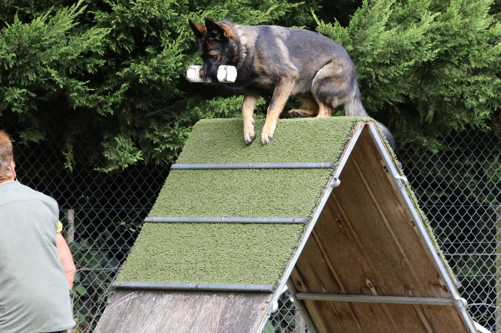
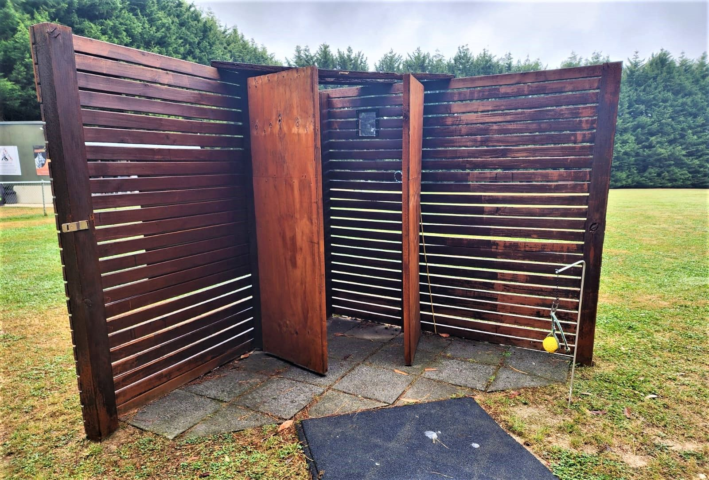
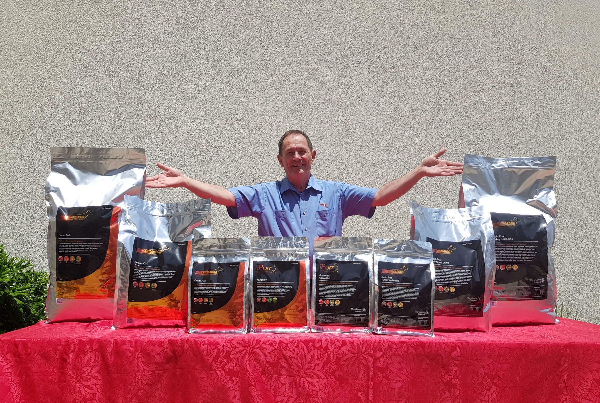

PD-01
Working & sport

32%
Protein
22% fat
Turkey Grain Free
High protein and fat for dogs that train, track, work and compete. Turkey and lamb, no grains, no chicken.
$168$2.02/day · 30 kg adult
 Proof, not promisesRead the lab case study
Proof, not promisesRead the lab case study
Australian-made dog food, built by a breeder of working dogs and an animal nutritionist. Fed to sport, working and family dogs since 2015.
From $48 · Rated 9/10 by Petfood Reviews

File 01 · Shop the formula
Formulated with Bill Wiadrowski, animal nutritionist since 1986. 97.2% Australian ingredients. Real meat first. Price per day is worked out from the feeding table printed on the bag. Bigger bags work out cheaper.
PD-01
Working & sport
32%
Protein
22% fat
High protein and fat for dogs that train, track, work and compete. Turkey and lamb, no grains, no chicken.
PD-02
Sensitive gut & skin

22%
Protein
14% fat
Wild-caught tuna and lamb for dogs with allergies, itchy skin or a touchy stomach. No chicken.
PD-03
Growth

29%
Protein
18% fat
Chicken-free growth food for brain, bone and lean muscle. What Von Forell litters are raised on.
Purple Boost · purple carrot, 9-strain probiotic and prebiotic topper. Add it to any bowl.

“We have recently accomplished the highest working dog title in a competition and Performadog has been an essential part of our success.”
Disclosure: Von Forell dog
Read all 34 reviews →Feeding calculator
Four questions. Which food, how much a day, how long a bag lasts and what it costs.
2 · Age
3 · Workload
4 · Sensitive gut or itchy skin?
Weight bands follow the bag: 5–10 kg 80–110 g, 10–20 kg 110–140 g… Working dogs get about 15% more, lighter dogs 15% less, seniors 10% less.
Recommended
per day ·
15 kg bag lasts
per day
Subscribe and we'll send the next bag , before this one runs out.
Shop nowFile 02 · Origin
Training wasn't enough, so Kris turned to breeding. Decades on, he'd learned two things make a performance dog: breeding and nutrition. When his sponsor's food changed and his dogs lost condition, he built his own.
Read Kris's story →1980
At 16, after the family home was broken into, Kris bought his first Dobermann and started training dogs.

1982
A dog let him down in a real situation. Training wasn't enough, so Kris turned to genetics and started breeding under the Von Forell name.
1984
Kris sets up a dog security company in Melbourne, putting his dogs to work every day.
1993
Joins the National Dog Trainers Federation and starts a frozen semen bank to protect the best bloodlines.

2000
Co-founds Detector Dogs Australia. Its teams now search venues like the MCG and the Port of Melbourne.

2003
Von Forell Vilco wins the National Australian Schutzhund Championship. Kris is made a Life Member of the NDTF.

2015
After his sponsor's food changed and his dogs lost condition, Kris starts trialling his own formula on the Von Forell dogs.
2018
Animal nutritionist Bill Wiadrowski, formulating diets since 1986, joins to refine the range.
File 03 · Evidence
One working dog. The same blood panel, twelve months apart, on nothing but Performadog. Every number published, and labelled for what it is: one dog's results.
Read the full reportHaematology & biochemistry
[Lab] · [Date 1] → [Date 2]
| Marker | Ref. range | Before | After 12 mo |
|---|---|---|---|
| Haemoglobin (g/L) | TBC | TBC | TBC |
| Red cell count (×10¹²/L) | TBC | TBC | TBC |
| Packed cell volume (%) | TBC | TBC | TBC |
| White cell count (×10⁹/L) | TBC | TBC | TBC |
| Neutrophils (×10⁹/L) | TBC | TBC | TBC |
| Total protein (g/L) | TBC | TBC | TBC |
| Albumin (g/L) | TBC | TBC | TBC |
| ALT (U/L) | TBC | TBC | TBC |
Figures go in from the two lab reports. One dog's documented results. Individual results vary.

“She is of a healthy weight, regularly runs 5km-7km with me (she would run further if I let her), has a great digestive system, and her coat is shiny and thick.”
File 04 · The dogs

Search & rescue
SAR team
James Craig · video to film
“Since switching to Performadog Super Premium Dry Dog food I've found all my dogs have a huge increase in energy and are able to keep their peak condition in periods of intense work.”
James Craig · Director & handler · Tasmania K9 Search and Rescue

Rottweiler · 20 km endurance
Rolex
Allgemein Rottweilers · video to film
“Our 2 year old female 'Swift' and 3 year old male 'Rolex' passed their Endurance Test… To quote our vet 'Rolex is as muscled as a Greyhound.'”
Allgemein Rottweilers · Breeders · Melbourne

Labrador · medical alert
Koda
Derek Wilson · video to film
“We constantly get remarks on how good Koda looks and the shine of her coat.”
Derek Wilson · Detection dog handler · Melbourne
File 05 · The difference
| Performadog | Typical supermarket premium | |
|---|---|---|
| Built for | Working dogs first. Fed in the Von Forell kennel since 2015 | The average pet |
| Who formulated it | Bill Wiadrowski, animal nutritionist since 1986 | Usually unnamed |
| Where it comes from | 97.2% Australian ingredients · Australian made & owned | Often imported |
| First ingredient | Turkey, lamb or wild-caught tuna | Often meat meal or by-products |
| Preserved with | Vitamin E and rosemary oil | Varies |
| Results on record | Published lab panel + 34 named owners | Rarely published |
From $48 · 2.5 kg trial bag
Free metro delivery over $150 · subscribe, skip or cancel anytime · palatability guarantee